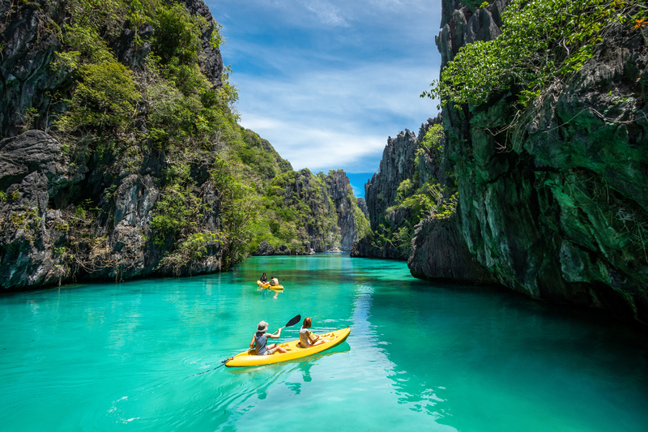

PIPILIIN PILIPINAS
Welcome to the Philippines: A Land of Endless Beauty
BORACAY
With its powdery white sand beaches and vibrant nightlife, Boracay is a tropical paradise that draws tourists from all over the world. Picture yourself lounging on the beach, soaking up the sun as you watch the breathtaking sunset. The island offers a plethora of water sports and activities, from snorkeling and scuba diving to kiteboarding and parasailing. Don't miss exploring the famous Puka Shell Beach and indulging in fresh seafood at the lively D'Mall. Boracay truly epitomizes the beauty of the Philippines' island life.

IFUGAO RICE TERRACES
Nestled amidst the picturesque Cordillera Mountains, the Ifugao Rice Terraces are a UNESCO World Heritage Site and a testament to the ingenuity of the indigenous Ifugao people. Carved into the mountainside over 2,000 years ago, these terraces showcase intricate agricultural techniques passed down through generations. Trek through the verdant landscapes, interact with local communities, and learn about the cultural significance of the rice terraces. The Ifugao Rice Terraces offer a glimpse into the harmonious relationship between man and nature.
TURQUIOUSE WATER
The Philippines boasts an abundance of pristine beaches and crystal-clear waters, making it a haven for beach lovers and water enthusiasts alike. From the secluded coves of Palawan to the vibrant reefs of Tubbataha, the country's marine biodiversity is unparalleled. Dive into the azure depths to encounter colorful coral reefs, tropical fish, and even majestic whale sharks. Whether you're swimming, snorkeling, or simply sunbathing on the shore, the turquoise waters of the Philippines promise an unforgettable aquatic adventure.
MABUHAY
Close your eyes and envision the allure of the Philippines – a land where vibrant cultures dance in harmony with nature's grandeur. Picture yourself amidst the powdery sands of Boracay, where each grain tells tales of tropical bliss. Yet, beyond these shores lie endless adventures beckoning your spirit of wanderlust. From the bustling streets of Manila pulsating with life to the serene whispers of Ifugao's rice terraces, the Philippines promises a tapestry of unforgettable moments. So, gather your dreams and embark on a journey where every step is a brushstroke in the masterpiece of your travels.
LUSH GREENERY
Beyond its idyllic beaches, the Philippines is also home to lush rainforests, verdant mountains, and cascading waterfalls. Explore the dense foliage of Bohol's Chocolate Hills, hike to the summit of Mount Pulag for panoramic views, or chase waterfalls in the jungles of Iligan. Immerse yourself in the natural beauty of the Philippines as you encounter diverse flora and fauna, from exotic orchids to endemic wildlife. With its abundance of greenery, the Philippines is a paradise for nature lovers and outdoor enthusiasts alike.VIBRANT CITY LIFE
Experience the bustling streets and vibrant energy of Philippine cities. From the historical landmarks of Manila to the modern skyscrapers of Makati, the urban landscape is a blend of tradition and progress. Explore colorful markets, indulge in delectable street food, and immerse yourself in the rich culture and heritage of the Philippines' urban centers. Whether you're wandering through colonial-era streets or dancing the night away in trendy clubs, Philippine cities offer a dynamic and unforgettable experience.TRANQUIL ISLAND ESCAPES
Escape to the serene beauty of Philippine islands and discover paradise on earth. From the pristine beaches of Palawan to the hidden gems of Siargao, each island offers a unique slice of tropical bliss. Dive into turquoise waters teeming with marine life, lounge on sun-kissed shores, or explore lush jungles and hidden lagoons. Whether you seek adventure or relaxation, Philippine islands promise unforgettable experiences and breathtaking landscapes.Step into a world where paradise meets adventure – welcome to the Philippines. Imagine yourself surrounded by the natural wonders of the Philippines, from the majestic terraced landscapes of Ifugao to the vibrant energy of Manila's urban streets. Every corner of this archipelago beckons with its own story, waiting to be explored. So, dust off your explorer's hat, for in the heart of the Philippines, an extraordinary journey awaits.
Exploring Paradise: A Journey Through the Philippines
Embark on a visual journey through the Philippines' top destinations. From the turquoise waters that stretch endlessly to lush greenery that envelops you in its embrace, these images offer a glimpse into the beauty that awaits. And don't forget to delve into our "blog stories" for insider tips and hidden gems, ensuring your Philippine adventure is nothing short of extraordinary.
Cityscape Chronicles: Unveiling the Urban Marvels of the Philippines
Peek into the heart of Philippine cities with captivating images capturing the essence of urban life. Traverse through the bustling streets, marvel at architectural wonders, and dive into the cultural melting pot that defines Philippine cities. Join us on this visual adventure and uncover the vibrant soul of the Philippines.
Hidden Havens: Discovering Tranquility in the Philippines

Unravel the secrets of the Philippines' tranquil hideaways with captivating images that transport you to secluded paradises. From pristine beaches kissed by azure waters to lush landscapes enveloped in tranquility, these hidden havens offer an escape from the ordinary. Let our visual stories guide you to serenity amidst the beauty of the Philippines.
Videos and Fun Events
Now for the fun stuff – we've got some epic videos and clips lined up for you. From drone shots of pristine beaches to time-lapse videos of bustling street markets, these visuals will transport you straight to the heart of the Philippines. Oh, and don't miss out on our list of fun events happening across the country – from music festivals to food fairs, there's always something exciting happening in the Philippines!